Ishinomaki
Ishinomaki · Miyagi
Ishinomaki
Highlighted on the Miyagi map.
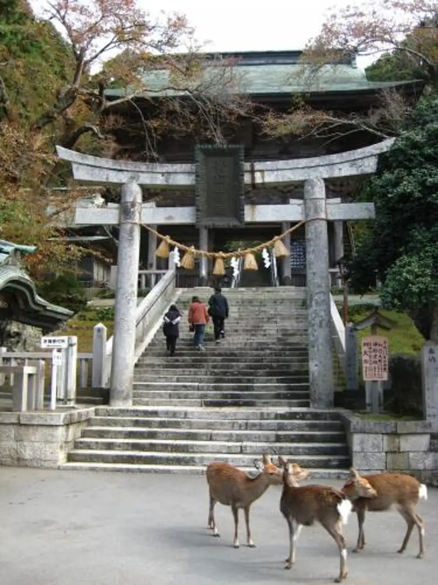
Stay
コンビニＡｙｅｒｓＲｏｃｋホテル石巻
AyersRock
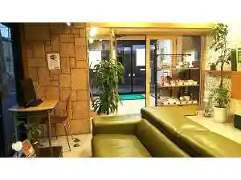
ホテルパシフィック
Hoterupashifikku
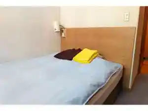
石巻サンプラザホテル
Ishinomaki Sanpurazahoteru
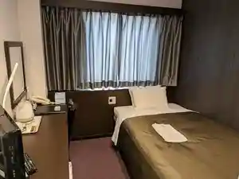
旅館いしのまき
Ryokan Ishinomaki
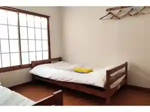
Ｔａｂｉｓｔ 石巻
Tabist
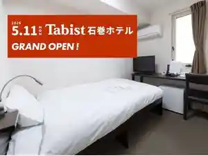
結の華
Musuno Hana
やすらぎの宿 メープルテラス
Yasuragino Yado Meepuruterasu
民宿 瑞幸
Minshuku Zui Sachi
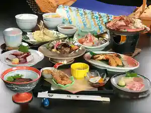
割烹民宿めぐろ
Kappou Minshuku Meguro
ジローズガーデン
Jiroozugaaden
追波湾テラス～考える葦～
Tsui Nami Wan Terasu ~ Kangae Ru Ashi ~
島周の宿さか井
Shima Shuu No Yado Saka I
Dining
すし寳来
Sushi Hourai
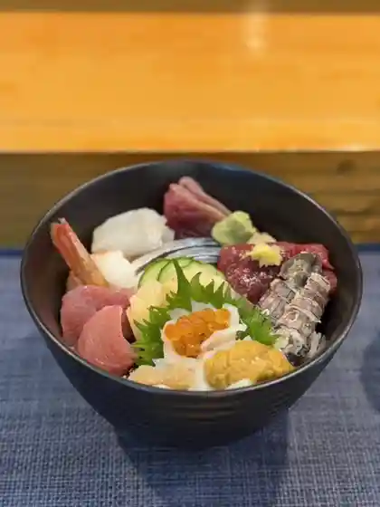
味彩しん家
Aji Sai Shin Ie
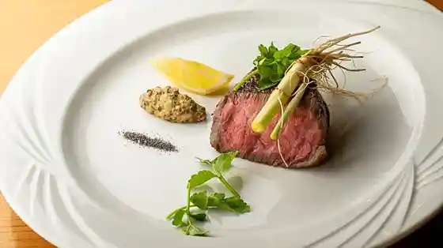
アル・ケッチァーノ 石巻
アル・ケッチァーノ 石巻
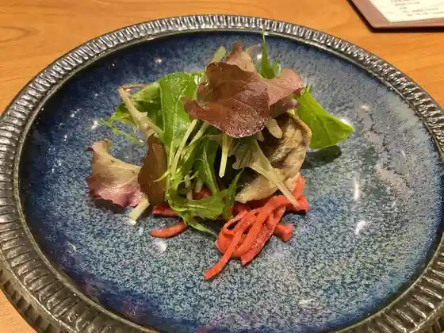
いまむら
Imamura
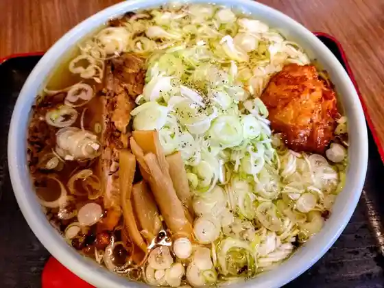
食堂きかく
Shokudo Kikaku
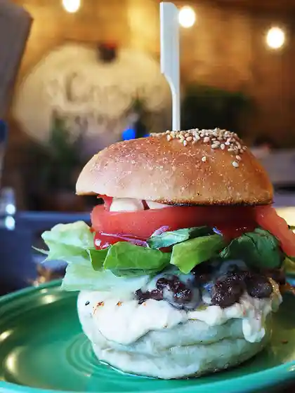
キャプテンカンガルー 石巻店
Kyaputenkangaruu Ishinomaki Mise
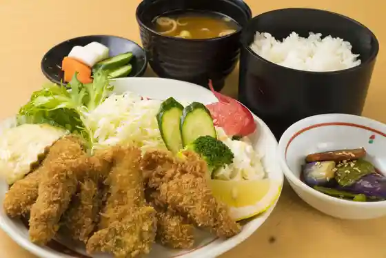
斎太郎食堂
Saitarou Shokudo
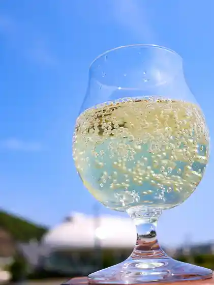
元気食堂
Genki Shokudo
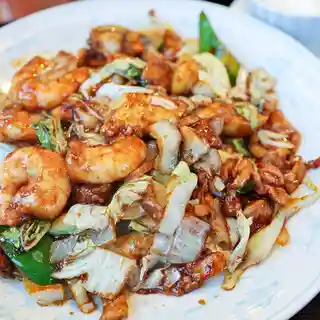
中国料理揚子江
Chuugokuryouri Yousukou
友福丸
Tomo Fukumaru
藤や食堂
Fuji Ya Shokudo
らーめん 善谷
Raamen Zen Tani
富喜寿司
Fuki Sushi
樺太屋
Karafuto Ya
竹乃浦 飛翔閣
Take No Ura Hishou Kaku
さかな処 三吉
Sakana Tokoro Sankichi
中華料理 龍昇
Chuukaryouri Ryuu Noboru
旭山ドライブイン
Asahiyama Doraibuin
海鮮料理 居酒屋 六文銭
Kaisen Ryouri Izakaya Roku Bun Sen
石巻焼きそば専門店 ハセベ
Ishinomaki Yakisoba Senmonten Hasebe
そば処 もりや
Soba Tokoro Moriya
黄金寿司
Ougon Sushi
滝川
Takikawa
まきいし
Makiishi
麺処 ふか瀬
Men Tokoro Fuka Se
麺舗 かのまたや
Men Ho Kanomataya
小西湖
Konishi Mizuumi
石巻天ぷら 和
Ishinomaki Tenpura Wa
食事処 こばやし 上品の郷店
Shokuji Tokoro Kobayashi Jouhin No Sato Mise
とんかつ 庄内 石巻店
Tonkatsu Shounai Ishinomaki Mise
また来て屋
Mata Kite Ya
かざみどり
Kazamidori
中華れすとらんとらの子
Chuuka Resutorantorano Ko
瑞幸
Zui Sachi
ひらつか
Hiratsuka
喜八櫓きた道
Kihachi Yagura Kita Michi
松竹
Shouchiku
デリシャス
Derishasu
トマトと苺のスイーツ専門店 Tomaberry
Tomato To Ichigo No Suiitsu Senmonten Tomaberry
ナーラック
Naarakku
PLAZA SAITO
PLAZA SAITO
粟野蒲鉾店
Awano Kamaboko Mise
海 番屋 フジマル
Umi Banya Fujimaru
麺屋 丸宮
Men Ya Maru Miya
カフェ ブルーゾーン
Kafe Buruuzoon
蕎麦と酒おもたか
Soba To Sake Omotaka
楓楸栞
Momiji Shuu Shiori
ごくう
Gokuu
中国料理 雲雀
Chuugokuryouri Unjaku
Cafe 蓮
Cafe
伝八寿し
Denpachi Hisashi Shi
IRORI 石巻
IRORI
ダイニング たまり場
Dainingu Tamari Ba
寿司正
Sushi Sei
道の駅 上品の郷
Michi No Eki Jouhin No Sato
岡埜栄泉 蛇田本店
Oka No Sakae Izumi Hebita Honten
パン工房 feeL
feeL
とり福
Tori Fuku
北上川テラス 七間倉
Kitakami Kawa Terasu Shichi Kan Kura
Trattoria Porto
Trattoria Porto
注受
Chuu Ju
中国料理一龍
Chuugokuryouri Ichi Ryuu
フェヴリエ
Fevurie
ホテルニューさか井
Hoterunyuu Saka I
ふなや
Funaya
石巻グランドホテル
Ishinomaki Gurandohoteru
追分温泉
Oiwake Onsen
仙臺油そばはてなプラス 石巻店
Sendai Abura Sobahatena Purasu Ishinomaki Mise
トラットリア・アゼリア
トラットリア・アゼリア
TEAVER TEAFACTORY
TEAVER TEAFACTORY
食 酒処 響夢味や
Shoku Sake Tokoro Kyou Yume Aji Ya
浜の暮らしのはまぐり堂
Hama No Kurashi Nohamaguri Dou
珈琲店豆の木
Koohii Mise Mame No Ki
新中華料理 福盛 石巻本店
Shinchuu Hana Ryouri Fukumori Ishinomaki Honten
居酒屋 壱歩
Izakaya Ippo
田代食堂
Tashiro Shokudo
いしのまき元気いちば
Ishinomaki Genki Ichiba
麺屋てっぺん
Men Ya Teppen
米澤ラーメン
Yonezawa Raamen
大もりや
Oomo Riya
温州菜館
Unshuu Saikan
牛たん ほづみ
Ushi Tan Hozumi
風月堂
Fuugetsu Dou
八鶏飯蔵
Hachi Niwatori Iikura
泰平
Taihei
味覚
Mikaku
スマイルマーケット
Sumairumaaketto
あぶみ屋 中里店
Abumi Ya Nakazato Mise
パーラー山と田んぼ
Paaraa Yama To Tanbo
寿司晴
Sushi Sei
お食事ハウス ローリック
O Shokuji Hausu Roorikku
駒寿し
Koma Hisashi Shi
中国飯店
Chuugoku Hanten
大沼製菓
Oonuma Seika
珈琲工房 いしかわ 道の駅 上品の郷店
Koohii Koubou Ishikawa Michi No Eki Jouhin No Sato Mise
おにぎり 野田や
Onigiri Noda Ya
割烹スタンド 松ばる
Kappou Sutando Matsu Baru
リーフデ・テラス
リーフデ・テラス
Cafe ユーカリ
Cafe
自然食食堂 さん
Shizen Shoku Shokudo San
鴻福
Kou Fuku
パンはパンでも…
Pan Ha Pan Demo …
MALLOW Boulangerie
MALLOW Boulangerie
ラ・シェール・アンジュ 本館
ラ・シェール・アンジュ 本館
焼肉 うしのまき 石巻店
Yakiniku Ushinomaki Ishinomaki Mise
牧場ラーメン
Bokujou Raamen
十割そば 丸まつ 石巻店
Juu Wari Soba Maruma Tsu Ishinomaki Mise
炭火焼肉 牛仁 石巻蛇田店
Sumibi Yakiniku Ushi Hitoshi Ishinomaki Hebita Mise
かめキッチン
Kame Kitchin
味の店 ささき
Aji No Mise Sasaki
東京屋食堂
Toukyou Ya Shokudo
から揚げ こっこ屋
Kara Age Kokko Ya
中華そば 緑龍
Chuuka Soba Midori Ryuu
麺屋 藤さい
Men Ya Fuji Sai
穀雨茶房もも
Kokuu Sabou Momo
炉ばた 海彦山彦 立町店
Ro Bata Umihiko Yamabiko Tachimachi Mise
パン工房 散歩道
Pan Koubou Sanpomichi
SUSHI & BAR 樹琳
SUSHI & BAR
味処 味楽
Ajidokoro Aji Raku
割烹民宿 めぐろ
Kappou Minshuku Meguro
THE BAR K
THE BAR K
白謙 石巻本店
Shiro Ken Ishinomaki Honten
ラ・シェール・アンジュ LM
ラ・シェール・アンジュ LM
ロマーナ
Romaana
炭火焼肉 牛正 石巻店
Sumibi Yakiniku Ushi Sei Ishinomaki Mise
蕎麦切り かぎ谷
Sobakiri Ri Kagi Tani
加藤菓子店
Katou Kashi Mise
すうぷ屋
Suupu Ya
竹善
Chikuzen
こころの森ガーデンカフェ
Kokorono Mori Gaadenkafe
吉田パン・菓子 みのり工房
吉田パン・菓子 みのり工房
カフェレストラン びすとろアン
Kaferesutoran Bisutoro An
らーめんハウス王水 蛇田店
Raamen Hausu Ousui Hebita Mise
中華そば ささき 石巻大橋店
Chuuka Soba Sasaki Ishinomaki Oohashi Mise
田代島 島のえき
Tashiro Shima Shima Noeki
オイスターキング
Oisutaakingu
PORTBALENA
PORTBALENA
広島のお好み焼 すぎ乃
Hiroshima Noo Konomi Yaki Sugi No
とんから食堂
Tonkara Shokudo
うわぬま屋
Uwanuma Ya
まちかど食堂 たかの
Machikado Shokudo Takano
レストラン いち
Resutoran Ichi
オアシスB&B
B&B
Gluttony
Gluttony
鮓やました
Kurage Yamashita
マル翔
Maru Shou
まるでん 北上ラーメン
Maruden Kitakami Raamen
横濱豚骨醤油 ラーメン佐原
Yokohama Tonkotsu Shouyu Raamen Sawara
三代目 浜八道
Sandaime Hama Hachidou
湖月亭
Kogetsu Tei
海鮮レストラン なぎさ
Kaisen Resutoran Nagisa
中国海鮮料理北園
Chuugoku Kaisen Ryouri Kitazono
やまだ 蛇田店
Yamada Hebita Mise
桂花
Keika
桂林館
Keirin Kan
かき小屋 渡波
Kaki Koya Watanoha
福龍飯店
Fuku Ryuu Hanten
すず
Suzu
アンドコーヒー
Andokoohii
喫茶 ジジホウダン
Kissa Jijihoudan
umikaze coffee
umikaze coffee
農家れすとらん お結び
Nouka Resutoran O Musubi
あいのや 石巻のぞみ野店
Ainoya Ishinomaki Nozomi Yaten
グリーンサム いちば
Guriinsamu Ichiba
中国料理 吉華
Chuugokuryouri Kichi Hana
食事処 あむ
Shokuji Tokoro Amu
栄屋食堂
Sakae Ya Shokudo
焼肉 ジュジュ
Yakiniku Juju
ISHINOMAKI まるしん
ISHINOMAKI
日本酒場 のれん
Nihonshu Ba Noren
バリュー・ザ・ホテル石巻
バリュー・ザ・ホテル石巻
廻鮮丸
Kaisen Maru
元祖ピーコック
Ganso Piikokku
焼肉冷麺ヤマト 石巻店
Yakiniku Reimen Yamato Ishinomaki Mise
南京飯店
Nankin Hanten
和幸 イオンモール石巻店
Kazuyuki Ionmooru Ishinomaki Mise
石川
Ishikawa
全席個室居酒屋 忍家 石巻店
Zensekikoshitsu Izakaya Nin Ie Ishinomaki Mise
浜長
Hama Chou
ayumino ハイカラ食堂 ご馳や
ayumino
萬楽堂
Man Gakudou
麺・焼肉の店 きく一
麺・焼肉の店 きく一
カフェ ザ ベイ
Kafe Za Bei
冷たい肉そば ぼんてん
Tsumetai Niku Soba Bonten
蒸しパン Once
Once
スパイスガーデン
Supaisugaaden
加非館
Ka Hi Kan
ecru
ecru
THE STAND COFFEE BREWERS
THE STAND COFFEE BREWERS
Lovely Sweets Factory
Lovely Sweets Factory
RITA'S CAFE&BAR
RITA&39S CAFE&BAR
豊里名物 かいてん焼き 石巻店
Toyosato Meibutsu Kaiten Yaki Ishinomaki Mise
パン屋 はこ
Pan Ya Hako
道の駅 硯上の里 おがつ
Michi No Eki Suzuri Ueno Sato Ogatsu
後山荘
Atoyama Sou
民宿 みなみ荘
Minshuku Minami Sou
ムッシュ マスノ アルパジョン 石巻総本店
Musshu Masuno Arupajon Ishinomaki Souhonten
水月堂物産
Suigetsu Dou Bussan
ハミングバード 石巻店
Hamingubaado Ishinomaki Mise
割烹 八幡家
Kappou Hachiman Ie
二代目 浜八道
Nidaime Hama Hachidou
とんかつ勝健
Tonkatsu Kachi Takeshi
焼肉清和
Yakiniku Kiyokazu
クローバー
Kuroobaa
Bistro種
Bistro
食事処みうら
Shokuji Tokoro Miura
夢屋
Yume Ya
とんかつぶー亭
Tonkatsubuu Tei
蛇の目寿司 気仙屋旅館
Hebi No Me Sushi Kesen Ya Ryokan
ホテルルートイン 石巻河南インター
Hoteruruutoin Ishinomaki Kanan Intaa
しみず
Shimizu
十五浜屋食堂
Juugo Hamaya Shokudo
焼肉 幸楽
Yakiniku Kouraku
中国料理 寿
Chuugokuryouri Hisashi
山水舘
Sansui Kan
DOUGH
DOUGH
わきあいあい
Wakiaiai
えくれーる 渡波店
Ekureeru Watanoha Mise
シェセッタ
Shiesetta
八鶏飯蔵 極 駅前店
Hachi Niwatori Iikura Kyoku Ekimae Mise
海船
Kaisen
三幸
Mitsuyuki
ふしみ屋菓子店
Fushimi Ya Kashi Mise
ポセらんち
Pose Ranchi
BB COFFEE
BB COFFEE
ficelleパン工房
ficelle
カフェ・トレ
カフェ・トレ
味楽
Aji Raku
ニューデイズ 石巻
Nyuudeizu Ishinomaki
喫茶と土産 南1の4
Kissa To Miyage Minami 1 No 4
野村庵
Nomura Iori
遊庭
Yuu Niwa
三膳世界 琳
Miyoshi Sekai Rin
サン ファン ヴィレッジ
San Fan Virejji
うまい鮨勘 石巻支店
Umai Sushi Kan Ishinomaki Shiten
かんながら イオン石巻店
Kannagara Ion Ishinomaki Mise
うまかべぇ～
Umakabee ~
食事処 しかいろ
Shokuji Tokoro Shikairo
まるいし
Maruishi
三陸の恵みを食す 石巻酒場 団欒 石巻駅前店
Sanriku No Megumi Wo Shokusu Ishinomaki Sakaba Danran Ishinomakieki Mae Mise
料亭 とり文
Ryoutei Tori Bun
紅蘭
Kouran
食堂パレス
Shokudo Paresu
公助
Kinsuke
石 亭
Ishi Tei
ショコレア
Shokorea
鳥厚
Tori Atsushi
王水 イオンモール石巻店
Ousui Ionmooru Ishinomaki Mise
楼蘭
Rouran
中国料理 鳳楽
Chuugokuryouri Ootori Raku
金兵衛茶屋
Kinbee Chaya
ホテル ルートイン 石巻中央
Hotel Ruutoin Ishinomaki Chuuou
麺屋敷マル翔 イオンモール石巻店
Men Yashiki Maru Shou Ionmooru Ishinomaki Mise
町田商店 石巻店
Machida Shouten Ishinomaki Mise
お食事処 元気亭
O Shokuji Tokoro Genki Tei
雄勝湾直送海鮮浜焼き 青木水産
Okatsu Wan Chokusou Kaisen Hamayaki Ki Aoki Suisan
吉野中華料理店
Yoshino Chuukaryouriten
八鶏飯蔵 上品の郷店
Hachi Niwatori Iikura Jouhin No Sato Mise
田中家
Tanaka Ie
炭のえん
Sumi Noen
エース オブ スペード
Eesu Obu Supeedo
Cafe Larimar
Cafe Larimar
てらさわ小進堂
Terasawa Shou Susumu Dou
原始焼 海彦山彦 あけぼの店
Genshi Yaki Umihiko Yamabiko Akebono Mise
仙臺ホルモン ガッツ 石巻門脇店
Sendai Horumon Gattsu Ishinomaki Kadowaki Mise
WASABI
WASABI
めぐカフェ
Megu Kafe
クロネコ堂
Kuroneko Dou
CAFE SUGAWARA
CAFE SUGAWARA
酒鮮ばんだい
Sake Sen Bandai
金華山黄金山神社 食堂
Kinkasan Ougon Sanshin Sha Shokudo
Canyon Bee
Canyon Bee
日星
Nichi Hoshi
コメ・カフェ
コメ・カフェ
和洋菓子 ヤマキ
Wayou Kashi Yamaki
lala sucre
lala sucre
ニュー魯曼停
Nyuu Ro Man Tei
coffee懐古
coffee
あいのや 渡波店
Ainoya Watanoha Mise
ホテル ハヤシヤ
Hotel Hayashiya
渚泊Station
Station
あたご荘
Atago Sou
ホテル パシフィック
Hotel Pashifikku
伊藤商店 石巻店
Itou Shouten Ishinomaki Mise
利久 石巻山下店
Toshihisa Ishinomaki Yamashita Mise
パンセ 石巻本店
Panse Ishinomaki Honten
蔵八ラーメン 石巻日赤病院前店
Kura Hachi Raamen Ishinomaki Nisseki Byouin Mae Mise
木の屋石巻水産 石巻本社工場
Ki No Ya Ishinomaki Suisan Ishinomaki Honshakoujou
麺 蔵八 イオン石巻店
Men Kura Hachi Ion Ishinomaki Mise
らーめんハウス王水 流留店
Raamen Hausu Ousui Ryuu Ryuu Mise
東京ラーメン はなはな
Toukyou Raamen Hanahana
鮨一八
Sushi Ichihatsu
天空庵
Tenkuu Iori
白謙蒲鉾店 門脇工場直売所
Shiro Ken Kamaboko Mise Kadowaki Koujou Chokubai Tokoro
裕味 中里店
Hiroshi Aji Nakazato Mise
千扇
Sen Ougi
そば処宝栄
Soba Tokoro Takara Sakae
パスタ＆カフェ 大麦小麦
Pasuta & Kafe Oomugi Komugi
やまだ
Yamada
ぼうず
Bouzu
REBORN ART STAND
REBORN ART STAND
上海楼
Shanhai Rou
ヤマザキYショップ かほく・上品の郷店
ヤマザキYショップ かほく・上品の郷店
榮壽司
Eiju Tsukasa
えくれーる 蛇田店
Ekureeru Hebita Mise
佐藤ミート
Satou Miito
鳥勝＋サルーテ
Tori Kachi + Saruute
Cafe プロムナード
Cafe
吉長
Kichi Chou
中華そば じゃのめ
Chuuka Soba Janome
田津田
Ta Tsuda
ベル・コルポ
ベル・コルポ
和酒美
Wa Sake Bi
華月
Kazuki
ひよりホルモン
Hiyori Horumon
貴久寿司
Takahisa Sushi
あぶみや あけぼの店
Abumiya Akebono Mise
仙臺ホルモン ガッツ 石巻蛇田店
Sendai Horumon Gattsu Ishinomaki Hebita Mise
宝寿司
Houju Tsukasa
貴龍苑
Takashi Ryuu En
安部 あまやき屋
Abe Amayaki Ya
ツインクル
Tsuinkuru
ISHINOMAKI HOP WORKS TAPROOM
ISHINOMAKI HOP WORKS TAPROOM
あおまる
Aomaru
パーラー 山と田んぼ みやぎ生協石巻大橋店
Paaraa Yama To Tanbo Miyagi Seikyou Ishinomaki Oohashi Mise
10円まんじゅう 上品の郷
10 En Manjuu Jouhin No Sato
食・呑み処「花々亭」
食・呑み処「花々亭」
あゆかわ荘
Ayukawa Sou
インドネパールレストラン サティ
Indonepaaruresutoran Satei
kochia
kochia
潤喫茶 puka
puka
イオンシネマ 石巻
Ionshinema Ishinomaki
居酒屋 じぱんぐ
Izakaya Jipangu
石巻合同庁舎 食堂
Ishinomaki Goudou Chousha Shokudo
阿部菓子店
Abe Kashi Mise
きっ茶 花々
Kitsu Cha Hana (kurikaesi)
キッチンねこ
Kitchin Neko
二色餅
Nishoku Mochi
高正ベーカリー
Takamasa Beekarii
フロレスタ 石巻R45店
Furoresuta Ishinomaki R45 Mise
びっくりドンキー 石巻店
Bikkuri Donkii Ishinomaki Mise
スシロー 石巻店
Sushiroo Ishinomaki Mise
トマト＆オニオン 石巻店
Tomato & Onion Ishinomaki Mise
コメダ珈琲店 石巻蛇田店
Komeda Koohii Mise Ishinomaki Hebita Mise
焼肉冷麺やまなか家 石巻店
Yakiniku Reimen Yamanaka Ie Ishinomaki Mise
かつや 宮城石巻店
Katsuya Miyagi Ishinomaki Mise
豪ーめん 石巻店
Gouu Men Ishinomaki Mise
麺屋壱番
Men Ya Ichiban
水澤屋もっちゃん
Mizusawa Ya Motchan
鳥辰
Tori Tatsu
三政商店 元気市場店
San Seishou Mise Genki Shijou Mise
食堂ほづみ
Shokudo Hozumi
竹寿司
Take Sushi
高大割烹
Kouta Kappou
KATZE
KATZE
亀甲寿司
Kikkou Sushi
焼鳥 おのでら
Yakitori Onodera
ロア
Roa
はまさいさい
Hamasaisai
上品の郷 ふたごの湯 食堂 木らら
Jouhin No Sato Futagono Yu Shokudo Ki Rara
二輪草
Nirin Kusa
ラ・ロレット
ラ・ロレット
鮨山下
Sushi Yamashita
カルン
Karun
ふたごの湯
Futagono Yu
えんや
Enya
お休み処 さとう
O Yasumi Tokoro Satou
カフェAB
Cafe AB
和食 桂
Washoku Katsura
牡鹿半島ビジターセンター
Oshika Han Shima Bijitaasentaa
珈琲豆と手しごとのモノ kyuu
Koohii Mame To Te Shigotono Mono Kyuu
City Lights
City Lights
味噌らーめん憲
Miso Raamen Nori
景松庵
Kei Shouan
津軽
Tsugaru
もつ焼きやまちゃん 石巻店
Motsu Yaki Yamachan Ishinomaki Mise
高徳
Takanori
y.style
y.style
すがん家
Sugan Ie
豆腐造り処させい
Toufu Tsukuri Shosa Sei
手打ちそば てらっぱだげ
Teuchi Chisoba Terappadage
White JiJi
White JiJi
土井菓子舗
Tsuchii Kashi Ho
海里
Kairi
IZAKAYA GYOSAI
IZAKAYA GYOSAI
菓匠 いとう
Kashou Itou
さくら屋
Sakura Ya
一寸ぼうし
Chotto Boushi
和
Wa
カフェ イッポ
Kafe Ippo
手打蕎麦 よしの
Teuchi Soba Yoshino
漁師民宿 はま屋
Ryoushi Minshuku Hama Ya
串焼き のんちゃん
Kushiyaki Nonchan
マイルーム COCO
COCO
らーめん堂 仙台っ子 石巻店
Raamen Dou Sendai Tsu Ko Ishinomaki Mise
スターバックスコーヒー イオンモール石巻店
Sutaabakkusukoohii Ionmooru Ishinomaki Mise
珈琲工房いしかわ 本店
Koohii Koubou Ishikawa Honten
はま寿司 石巻蛇田店
Hama Sushi Ishinomaki Hebita Mise
スターバックスコーヒー 石巻バイパス店
Sutaabakkusukoohii Ishinomaki Baipasu Mise
すき家 石巻元倉店
Suki Ie Ishinomaki Motokura Mise
丸亀製麺 石巻店
Marugame Seimen Ishinomaki Mise
本田水産
Honda Suisan
ごはん処 かつ庵 石巻蛇田店
Gohan Tokoro Katsu Iori Ishinomaki Hebita Mise
丸亀製麺 イオンモール石巻店
Marugame Seimen Ionmooru Ishinomaki Mise
ジョリーパスタ 石巻あゆみ野店
Joriipasuta Ishinomaki Ayumi Yaten
100時間カレー イオンモール石巻店
100 Jikan Karee Ionmooru Ishinomaki Mise
サイゼリヤ イオンモール石巻店
Saizeriya Ionmooru Ishinomaki Mise
果琳 イオンモール石巻店
Ka Rin Ionmooru Ishinomaki Mise
ホルモン食堂食樂 石巻中央店
Horumon Shokudo Shoku Raku Ishinomaki Chuuou Mise
長寿飯店
Chouju Hanten
鮨 中華料理 みなと
Sushi Chuukaryouri Minato
ドトールコーヒーショップ イオンモール石巻店
Dotoorukoohiishoppu Ionmooru Ishinomaki Mise
アルパジョン 石巻中里店
Arupajon Ishinomaki Nakazato Mise
ヤマサコウショウ直売所 孝彰
Yamasakoushou Chokubai Tokoro Takashi Akira
勝手処 絲
Katte Tokoro Ito
森の芽ぶき たまご舎 イオンモール石巻
Mori No Me Buki Tamago Sha Ionmooru Ishinomaki
汐だまり
Shio Damari
丼助 渡波新成店
Donburi Jo Watanoha Shin Sei Mise
とんちんかん
Tonchinkan
うどん･そば･おにぎり和山
Udon Udon Soba Soba Onigiri Wa Yama
ピザカフェ おひさまや
Pizakafe Ohisamaya
シエルエトワレ
Shieruetoware
石巻うまいものマルシェ
Ishinomaki Umaimono Marushie
平孝酒造店
Taira Takashi Shuzou Mise
リボーンアート ダイニング
Riboon'aato Dainingu
笠屋菓子店
Kasa Ya Kashi Mise
アトリエ ニコ
Atorie Niko
おおはし
Oohashi
日本料理 大川
Nihonryouri Ookawa
菓子の三平
Kashi No Sanpei
吉田屋食堂
Yoshidaya Shokudo
美食酒家 梟
Bishoku Shuka Fukurou
炭や
Sumi Ya
みんなのカフェ ランラン フィシカント
Minnano Kafe Ranran Fishikanto
かどや肉店
Kadoya Niku Mise
カフェ あぷりこっと
Kafe Apurikotto
味六亭
Aji Roku Tei
魚み亭
Sakana Mi Tei
佐和屋
Sawa Ya
味巣亭
Aji Su Tei
おやつショップ さらの家
Oyatsu Shoppu Sarano Ie
割烹 小松
Kappou Komatsu
末広食堂
Suehiro Shokudo
美食酒房 SANGI
SANGI
カフェふるふる
Kafe Furufuru
FKB
FKB
居酒屋 大すけ
Izakaya Taisu Ke
味所 花丸
Ajidokoro Hanamaru
ロマン海遊２１
Roman Kaiyuu 2 1
墨廼江酒造
Sumi No Kou Shuzou
バー爺放談
Baa Jii Houdan
白松がモナカ本舗
Shiramatsu Ga Monaka Honpo
KALIKA
KALIKA
猫Cafeごろにゃん
Neko Cafe Goronyan
韓国家庭料理 ミョヌリ
Kankoku Kateiryouri Myonuri
ミニストップ 石巻蛇田西店
Minisutoppu Ishinomaki Hebita Nishi Mise
居酒屋 ゆう由
Izakaya Yuu Yu
まねきショップ
Maneki Shoppu
わび祐
Wabi Suke
茶みせ ひら久
Cha Mise Hira Kyuu
石巻市震災遺構門脇小学校
Ishinomakishi Shinsai Ikou Kadowaki Shougakkou
ビーカフェ なつめ
Biikafe Natsume
ホエールタウン おしか
Hoeerutaun Oshika
おにぎりカフェ まっちゃん八百や
Onigiri Kafe Matchan Happyaku Ya
コリンクハウス
Korinkuhausu
かき氷専門店 氷麗
Kaki Koori Senmonten Koori Rei
cafe amo 石巻店
cafe amo
サトー商会 石巻蛇田店
Satoo Shoukai Ishinomaki Hebita Mise
ただいま with めぐカフェ
Tadaima With Megu Kafe
JIN COFFEE.
JIN COFFEE.
あむーる工房
Amuuru Koubou
イルヴィラージュ
Iruviraaju
青島テラス cafe44
cafe44
石巻観光協会 駅前案内所
Ishinomaki Kankoukyoukai Ekimae Annaijo
和牛乃亀山
Wagyuu No Kameyama
ファミリーマート 石巻西山町店
Famiriimaato Ishinomaki Nishiyama Machi Mise
あとりえらいおんどあ
Atorieraiondoa
comerun
comerun
お酒 よこやま
O Sake Yokoyama
sweets stand Rplus
sweets stand Rplus
くるまやラーメン 石巻店
Kurumaya Raamen Ishinomaki Mise
幸楽苑 大街道店
Kouraku En Taigai Michi Mise
南部家敷 石巻店
Nanbu Ie Shiki Ishinomaki Mise
やよい軒 石巻中里店
Yayoi Ken Ishinomaki Nakazato Mise
ペッパーランチ イオンモール石巻店
Peppaaranchi Ionmooru Ishinomaki Mise
平禄寿司 宮城石巻東中里店
Taira Roku Sushi Miyagi Ishinomaki Higashinaka Sato Mise
CoCo壱番屋 石巻蛇田店
Coco Ichiban Ya Ishinomaki Hebita Mise
ガスト 石巻店
Gasuto Ishinomaki Mise
丸源ラーメン 石巻店
Maru Gen Raamen Ishinomaki Mise
マクドナルド 石巻蛇田店
Makudonarudo Ishinomaki Hebita Mise
ミスタードーナツ イオンモール石巻ショップ
Misutaadoonatsu Ionmooru Ishinomaki Shoppu
松屋(松のや併設) 石巻恵み野店
Matsuya ( Matsu Noya Heisetsu ) Ishinomaki Megumi Yaten
大阪王将 イオンモール石巻店
Oosakaooshou Ionmooru Ishinomaki Mise
末永海産株式会社
Suenaga Kaisan Kabushikigaisha
めん屋武蔵
Men Ya Musashi
しゃぶ葉 石巻西店
Shabu Ha Ishinomaki Nishi Mise
好松
Yoshimatsu
たこふじ
Takofuji
焼肉ホルモンのキムチ屋本舗
Yakiniku Horumon No Kimuchi Ya Honpo
味平ラーメン
Ajihei Raamen
島っ子ラーメン
Shima Tsu Ko Raamen
紅ばら 生協蛇田店
Kurenai Bara Seikyou Hebita Mise
穴場処 かくれ家
Anaba Tokoro Kakure Ie
肉バル オライーノ
Niku Baru Oraiino
甘陣本舗
Kan Jin Honpo
鮨興
Sushi Kyou
肉と惣菜の店 ながおか
Niku To Souzai No Mise Nagaoka
旬ノ酒場 すばる
Jun No Sakaba Subaru
手造りパン工房 パオ
Te Tsukuri Pan Koubou Pao
銚子屋
Choushi Ya
とん平
Ton Taira
蒲鉾本舗 高政 石巻駅前店
Kamaboko Honpo Takamasa Ishinomakieki Mae Mise
青とうがらし
Ao Tougarashi
むぎ
Mugi
カネハチ橋本かまぼこ店
Kanehachi Hashimoto Kamaboko Mise
カフェ・ヌーン
カフェ・ヌーン
ファミリーマート 石巻中浦店
Famiriimaato Ishinomaki Nakaura Mise
鳴海
Narumi
Ryu～s
Ryus
割烹竹ふじ
Kappou Take Fuji
炭火焼肉 牛吉
Sumibi Yakiniku Ushi Kichi
ファミリーマート 渡波栄田店
Famiriimaato Watanoha Sakaeda Mise
酒房ふ
Sake Bou Fu
焼肉 椿
Yakiniku Tsubaki
川なみ
Kawa Nami
ジャンプ
Janpu
あづみ乃
Azumi No
割烹まる丁
Kappou Maru Chou
すず忠
Suzu Tadashi
金華山醸造
Kinkasan Jouzou
一杯呑みや こまち
Ippai Nomi Ya Komachi
Small
Small
まじんBOO
Majin Boo
ローリック
Roorikku
UnderLiner
UnderLiner
洋食の店 オリーブの木
Youshoku No Mise Oriibu No Ki
韓国料理 純豆腐屋
Kankokuryouri Jun Toufuya
丹野精肉店
Tanno Seinikuten
萬腹や
Man Hara Ya
ぐるめ処はんじろう
Gurume Tokoro Hanjirou
酒肆山﨑
Shushi Yama Yama
ごはんや maman'chi
maman&39chi
ホルモン 和
Horumon Wa
カレー屋DISCO
DISCO
YUTORIYA
YUTORIYA
居酒屋 松風
Izakaya Matsukaze
大衆酒場 もぐもぐ
Taishuu Sakaba Mogumogu
Nuovo
Nuovo
もつ煮屋まめちゃん
Motsu Ni Ya Mamechan
居酒屋いいの
Izakaya Iino
幸楽苑 蛇田店
Kouraku En Hebita Mise
吉野家 石巻バイパス店
Yoshinoya Ishinomaki Baipasu Mise
ココス 石巻店
Kokosu Ishinomaki Mise
サブウェイ イオンモール石巻店
Sabuuei Ionmooru Ishinomaki Mise
モスバーガー 石巻大街道店
Mosubaagaa Ishinomaki Taigai Michi Mise
喜久水庵 イオンモール石巻店
Yoshihisa Mizu Iori Ionmooru Ishinomaki Mise
道とん堀 石巻店
Michi Ton Hori Ishinomaki Mise
マクドナルド ４５号石巻店
Makudonarudo 4 5 Gou Ishinomaki Mise
ディッパーダン イオンモール石巻FC店
Dippaadan Ionmooru Ishinomaki Fc Mise
ドトールコーヒーショップ 石巻中里店
Dotoorukoohiishoppu Ishinomaki Nakazato Mise
タリーズコーヒー 石巻赤十字病院店
Tariizukoohii Ishinomaki Sekijuuji Byouin Mise
ケンタッキーフライドチキン イオンモール石巻店
Kentakkiifuraidochikin Ionmooru Ishinomaki Mise
吉野家 石巻大街道店
Yoshinoya Ishinomaki Taigai Michi Mise
牛角焼肉食堂 イオンモール石巻店
Gyuukaku Yakiniku Shokudo Ionmooru Ishinomaki Mise
いろはにほへと 石巻駅前店
Irohanihoheto Ishinomakieki Mae Mise
焼肉 きんぐ 石巻店
Yakiniku Kingu Ishinomaki Mise
中華そば専門 田中そば店 石巻店
Chuuka Soba Senmon Tanaka Soba Mise Ishinomaki Mise
ピザハット 石巻店
Pizahatto Ishinomaki Mise
マクドナルド イオンモール石巻店
Makudonarudo Ionmooru Ishinomaki Mise
お持ち帰り処 丼助丼丸 石巻新境町店
O Mochikaeri Tokoro Donburi Jo Donburi Maru Ishinomaki Shin Sakaimachi Mise
たい夢 石巻店
Tai Yume Ishinomaki Mise
すき家 石巻あけぼの店
Suki Ie Ishinomaki Akebono Mise
パン工場 石巻店
Pan Koujou Ishinomaki Mise
ビアードパパの作りたて工房 イオンモール石巻店
Biaadopapa No Tsukuri Tate Koubou Ionmooru Ishinomaki Mise
和風レストランまるまつ 石巻新橋店
Wafuu Resutoran Marumatsu Ishinomaki Shinbashi Mise
牛角 石巻店
Gyuukaku Ishinomaki Mise
三全 イオンモール石巻店
San Zen Ionmooru Ishinomaki Mise
銀座コージーコーナー イオン石巻店
Ginza Koojiikoonaa Ion Ishinomaki Mise
一本堂 石巻あけぼの店
Ippon Dou Ishinomaki Akebono Mise
ほっともっと 石巻あけぼの店
Hottomotto Ishinomaki Akebono Mise
くつろぎダイニング とりあえず吾平 宮城石巻蛇田店
Kutsurogi Dainingu Toriaezu Aira Miyagi Ishinomaki Hebita Mise
モンペリエ 石巻中里店
Monperie Ishinomaki Nakazato Mise
ゆず庵 石巻店
Yuzu Iori Ishinomaki Mise
ほっともっと 石巻元倉店
Hottomotto Ishinomaki Motokura Mise
ほっともっと 石巻大街道店
Hottomotto Ishinomaki Taigai Michi Mise
不二家 イオンSuC石巻東店
Fujiya Ion Suc Ishinomaki Higashi Mise
パン工場 イオンスーパーセンター 石巻東店
Pan Koujou Ionsuupaasentaa Ishinomaki Higashi Mise
B・Bクレープ
B・Bクレープ
美さわ
Utsukusa Wa
グッズショップ 墨汁一滴
Guzzushoppu Bokujuu Itteki
マルアキ津田海苔店
Maruaki Tsuda Nori Mise
さかな屋 魚福
Sakana Ya Sakana Fuku
ミニストップ 石巻サンプラザホテル店
Minisutoppu Ishinomaki Sanpurazahoteru Mise
魚しん
Sakana Shin
俵鮨
Tawara Sushi
がーでん晴耕雨読
Gaaden Seikouudoku
アゲイン
Agein
発酵喫茶店 Masha
Masha
花月堂
Kagetsu Dou
幸楽苑のからあげ家 蛇田店
Kouraku En Nokaraage Ie Hebita Mise
モンペリエ 石巻蛇田店
Monperie Ishinomaki Hebita Mise
やきとり 蛍
Yakitori Hotaru
丸伊農産
Maru I Nousan
和ダイナー イラスケ
Wa Dainaa Irasuke
ミニストップ 石巻大街道北店
Minisutoppu Ishinomaki Taigai Douhoku Mise
ビート ステーション
Biito Suteeshon
ヴォーグ
Voogu
寿司 三福
Sushi Sanpuku
モンペリエ ヨークベニマル中浦店
Monperie Yookubenimaru Nakaura Mise
カフェ バタフライ
Kafe Batafurai
ワタママ食堂
Watamama Shokudo
モンペリエ ヨークベニマル湊鹿妻店
Monperie Yookubenimaru Minato Shika Tsuma Mise
LAWSON 石巻大宮町
LAWSON
アーティクルズ
Aateikuruzu
暮六つ
Kure Mutsu
ふれあいいちば 菜花
Fureaiichiba Nanohana
やさいっ娘
Yasaitsu Musume
岩渕鶏肉店
Iwabuchi Toriniku Mise
やきにくや
Yakinikuya
居酒屋 銀次郎
Izakaya Ginjirou
千の風
Sen No Kaze
築地銀だこ イオン石巻店
Tsukiji Gin Dako Ion Ishinomaki Mise
サーティワンアイスクリーム イオンモール石巻店
Saateiwan'aisukuriimu Ionmooru Ishinomaki Mise
シャトレーゼ 石巻中里店
Shatoreeze Ishinomaki Nakazato Mise
二色餅 石巻駅前店
Nishoku Mochi Ishinomakieki Mae Mise
魚民 石巻駅前店
Uotami Ishinomakieki Mae Mise
ナイス ピクニック デイ 石巻駅前店
Naisu Pikunikku Dei Ishinomakieki Mae Mise
つつみ屋 石巻店
Tsutsumi Ya Ishinomaki Mise
サンエーの焼きたてベーカリー イトーヨーカドー 石巻あけぼの店
San'ee No Yaki Tate Beekarii Itooyookadoo Ishinomaki Akebono Mise
フタバ イン
Futaba In
レジリエンス・バー
レジリエンス・バー
石巻ダイニングオリーノ
Ishinomaki Daininguoriino
FUNFOOD Gina
FUNFOOD Gina
くいもの屋わん 石巻駅前店
Kuimono Ya Wan Ishinomakieki Mae Mise
パン工房 アン・ジュール みやぎ生協蛇田店
パン工房 アン・ジュール みやぎ生協蛇田店
珈琲工房いしかわ サンエー石巻あけぼの店
Koohii Koubou Ishikawa San'ee Ishinomaki Akebono Mise
ミニストップ 石巻大橋3丁目店
Minisutoppu Ishinomaki Oohashi 3 Choume Mise
焼鳥とんこ
Yakitori Tonko
味よし
Aji Yoshi
Coffeeたいむ
Coffee
マリンライフ
Marinraifu
守谷フルーツ 本店
Moriya Furuutsu Honten
日和製菓
Hiyori Seika
もりちゃん
Morichan
漁師の宿 あたみ荘
Ryoushi No Yado Atami Sou
むぎ菓子店
Mugi Kashi Mise
パティスリージュリアン イトーヨーカドー石巻あけぼの店
Pateisuriijurian Itooyookadoo Ishinomaki Akebono Mise
すぎ
Sugi
和ダイニング葵
Wa Dainingu Aoi
サン・ファンショップ
サン・ファンショップ
安兵衛
Yasubee
SHOT BOO MAHALO
SHOT BOO MAHALO
梶原もち店
Kajiwara Mochi Mise
山内農場 石巻駅前店
Yamauchi Noujou Ishinomakieki Mae Mise
Thousand Leaves Bagel
Thousand Leaves Bagel
押し寿司 今誠輝
Oshi Sushi Ima Makoto Teru
ナポリの窯 石巻店
Napori No Kama Ishinomaki Mise
おかしのいえ
Okashinoie
KARATTO!AGEMARU!
KARATTOAGEMARU
上野コーヒー
Ueno Koohii
フード&ショットバー 弾
Fuudo & Shottobaa Dan
セブンイレブン 石巻渡波店
Sebun'irebun Ishinomaki Watanoha Mise
ウィズマム ヨークベニマル大街道店
Uizumamu Yookubenimaru Taigai Michi Mise
ヨークベニマル 湊鹿妻店
Yookubenimaru Minato Shika Tsuma Mise
旅館とちぎ
Ryokan Tochigi
冬のおやつあじまん本舗 イオンスーパーセンター石巻東店
Fuyu Nooyatsuajiman Honpo Ionsuupaasentaa Ishinomaki Higashi Mise
八百清商店
Happyaku Kiyoshi Shouten
石巻アパートメントホテル
Ishinomaki Apaatomentohoteru
まちの小さなお菓子屋さん 輪
Machino Chiisa Nao Kashiya San Wa
LAWSON 河北インター
LAWSON
もち吉 石巻店
Mochi Kichi Ishinomaki Mise
しまの茶屋どんぐり
Shimano Chaya Donguri
SONO
SONO
居酒家ごはん ふらりむらさき 宮城石巻湊店
Kyo Shuka Gohan Furarimurasaki Miyagi Ishinomaki Minato Mise
キング ビー
Kingu Bii
キッチン！にじまる
Kitchin ! Nijimaru
ぱんぷきん
Panpukin
コンビニエアーズロックホテル石巻
Konbinieaazurokkuhoteru Ishinomaki
内海商店
Utsumi Shouten
フィッシュボーン
Fisshuboon
麺屋 結う
Men Ya Yuu
ヨークベニマル 石巻蛇田店
Yookubenimaru Ishinomaki Hebita Mise
フレッシュ製パン
Furesshu Seipan
外房捕鯨 くじら家
Sotobou Hogei Kujira Ie
石巻蒲鉾
Ishinomaki Kamaboko
やきとり大吉 石巻店
Yakitori Daikichi Ishinomaki Mise
一平寿し
Ippei Hisashi Shi
たい焼き専門店 大成苑
Tai Yaki Senmonten Taisei En
カギカッコ
Kagikakko
たけ志
Take Kokorozashi
あいのや 大街道店
Ainoya Taigai Michi Mise
日和寿司
Hiyori Sushi
八鶏飯蔵 イトーヨカードー・サンエー石巻あけぼの店
八鶏飯蔵 イトーヨカードー・サンエー石巻あけぼの店
食事処かんた
Shokuji Tokoro Kanta
インドレストラン アマ
Indoresutoran Ama
Omu蓮
Omu Hasu
もものうらビレッジ
Momonoura Birejji
マルマサ 近藤水産
Marumasa Kondou Suisan
茂木家ファクトリー
Motegi Ie Fakutorii
セブンイレブン 石巻あゆみ野店
Sebun'irebun Ishinomaki Ayumi Yaten
街角Cafe 桜
Cafe
焼き鳥 翔輝
Yakitori Shou Teru
石もり
Ishi Mori
小林食堂
Kobayashi Shokudo
イオン 石巻駅前店
Ion Ishinomakieki Mae Mise
ミズノシーフーズ
Mizunoshiifuuzu
たく屋
Taku Ya
あいか
Aika
ピザーラ 石巻店
Pizaara Ishinomaki Mise
フレッシュ・フーズ
フレッシュ・フーズ
ヨークベニマル 石巻中里店
Yookubenimaru Ishinomaki Nakazato Mise
バーチャルフード 新世界
Baacharufuudo Shinsekai
快活CLUB 石巻中里店
Kaikatsu Club Ishinomaki Nakazato Mise
潮美荘
Shiomi Sou
四釜商店
Shikama Shouten
今日の昼ごはん
Kyou No Hiru Gohan
コーヒーショップ ルーツ
Koohiishoppu Ruutsu
高松食堂
Takamatsu Shokudo
あいのや 中里店
Ainoya Nakazato Mise
味彩 絆 本店
Aji Sai Kizuna Honten
kimuriya
kimuriya
メープルテラス
Meepuruterasu
家庭割烹 水車
Katei Kappou Suisha
泰平荘
Taihei Sou
古民家カフェ福猫
Ko Minka Kafe Fukuneko
瑠璃庵
Ruri Iori
北村ブルーベリー農園
Kitamura Buruuberii Nouen
カルディ コーヒーファーム 石巻店
Karudi Koohiifaamu Ishinomaki Mise
大内産業
Oouchi Sangyou
マルナカ遠藤水産
Marunaka Endou Suisan
OTTAN TOTTO
OTTAN TOTTO
真寿司
Masumi Tsukasa
梅川
Umekawa
アントラークラフツ
Antoraakurafutsu
うつみパンや
Utsumi Pan Ya
めん六や 宮城石巻店
Men Roku Ya Miyagi Ishinomaki Mise
韓ビニ 石巻店
Kan Bini Ishinomaki Mise
大衆食堂 ぴよ吉 立町店
大衆食堂 ぴよ吉 立町店
海人
Ama
BAKERY Kanon
BAKERY Kanon
タマホテル
Tamahoteru
アンテナショップ パオ
Antenashoppu Pao
日の出館
Hinode Kan
ダイニングバー GINGA
GINGA
新子舎
Atarashi Sha
石巻屋台
Ishinomaki Yatai
タツミ食品
Tatsumi Shokuhin
はなよし
Hanayoshi
参集殿
Sanshuu Dono
セブンイレブン 石巻鋳銭場店
Sebun'irebun Ishinomaki Chuusen Ba Mise
さんまのヤマホン あゆみ野店
Sanmano Yamahon Ayumi Yaten
カイタク
Kaitaku
みうら海産物店
Miura Kaisanbutsu Mise
石巻サンプラザホテル
Ishinomaki Sanpurazahoteru
蒲鉾本舗 高政 イオン石巻店
Kamaboko Honpo Takamasa Ion Ishinomaki Mise
スーパーセンタートライアル 石巻店
Suupaasentaatoraiaru Ishinomaki Mise
鮎川くじら本舗
Ayukawa Kujira Honpo
ファミリーマート 石巻南中里店
Famiriimaato Ishinomaki Nanchuu Sato Mise
高島屋製菓店
Takashima Ya Seika Mise
ザ・ビッグ 釜大街道店
ザ・ビッグ 釜大街道店
寿司龍
Sushi Ryuu
杉山商店
Sugiyama Shouten
花梨
Karin
ユウゲン
Yuugen
M＆K
M&K
かめ かふぇ
Kame Kafe
札幌ラーメン味平
Sapporo Raamen Ajihei
みやぎ生協 蛇田店
Miyagi Seikyou Hebita Mise
K
K
喫茶室 月子
Kissashitsu Gesshi
smoking play
smoking play
ダイニングバー 小料理かにへい
Dainingubaa Koryouri Kanihei
もな
Mona
たぬき屋
Tanuki Ya
満咲
Man Saki
ふぼ
Fubo
居酒屋宴
Izakaya Utage
大衆酒場 ちょっと あべや
Taishuu Sakaba Chotto Abeya
歩
Ho
焼き鳥 たくみ
Yakitori Takumi
パン工房 アンジュール 石巻大橋店
Pan Koubou Anjuuru Ishinomaki Oohashi Mise
佳与
Kayo
山小屋
Yamagoya
菊地旅館
Kikuchi Ryokan
Shisha×Cafe&Bar Chillax
ShishaCafe&Bar Chillax
絲
Ito
木村旅館
Kimura Ryokan
居酒屋ようこ
Izakaya Youko
グラスガーデン
Gurasugaaden
ナゴミナチュルア オーガニックハーブティーカフェ 石巻店
Nagominachurua Ooganikkuhaabuteiikafe Ishinomaki Mise
韓国家庭料理 青麦(チョンボリ)
Kankoku Kateiryouri Aomugi ( Chonbori )
酒処銀座
Sake Tokoro Ginza
桑浜 漁師民宿
Kuwa Hama Ryoushi Minshuku
Secret Base
Secret Base
メリーチョコレート 藤崎石巻店
Meriichokoreeto Fujisaki Ishinomaki Mise
長栄館
Chouei Kan
美浦旅館
Mihoro Ryokan
炭火焼 グリルとハンバーグ スミ`sキッチン
Sumibi Yaki Guriru To Hanbaagu Sumi `s Kitchin
居酒屋さよちゃん
Izakaya Sayochan
フィールド
Fiirudo
鮨処東家
Sushi Tokoro Azumaya
真崎荘
Masaki Sou
大国屋旅館
Taikoku Ya Ryokan
呑処じゅん
Don Tokoro Jun
呑処ぽんぽこ
Don Tokoro Ponpoko
こよい
Koyoi
うまいもんDeli 萱
Deli
飲み処真美
Nomi Tokoro Mami
新勝
Shinshou
Hardroad108
Hardroad108
食事処 かず 石巻店
Shokuji Tokoro Kazu Ishinomaki Mise
カワチ薬品 石巻西店
Kawachi Yakuhin Ishinomaki Nishi Mise
居酒屋春が来た
Izakaya Haru Ga Kita
トラウト
Torauto
響
Kyou
永楽園茶露夢
Eiraku Sono Cha Tsuyu Yume
キャノンボール
Kyanonbooru
居酒や みみずく
Kyo Sake Ya Mimizuku
モスバーガー 石巻あけぼの店
Mosubaagaa Ishinomaki Akebono Mise
ファミリーマート 牡鹿店
Famiriimaato Oshika Mise
ケセラセラ
Keserasera
炭火焼き すみせん
Sumibi Yaki Sumisen
居酒屋・レストラン茶や
居酒屋・レストラン茶や
カラオケ まねきねこ 石巻元倉店
Karaoke Manekineko Ishinomaki Motokura Mise
パン工房 ここあ
Pan Koubou Kokoa
旅館小松荘
Ryokan Komatsu Sou
ちゃきん屋 和
Chakin Ya Wa
food&bar Puan
food&bar Puan
まんまるキッチン
Manmaru Kitchin
天
Ten
まいまい
Maimai
横綱寿司
Yokozuna Sushi
千松
Sen Matsu
レベルドライブ
Reberudoraibu
さかり旅館
Sakari Ryokan
まごころ弁当 石巻店
Magokoro Bentou Ishinomaki Mise
ベレッツアイーグル
Berettsuaiiguru
夕やけこやけ
Yuu Yakekoyake
縁や
Heri Ya
磯寿司
Iso Sushi
Ｚｕ‐Ｚｕ
ZuZu
ザ・ビッグ 石巻鹿又店
ザ・ビッグ 石巻鹿又店
居酒屋ゆきちゃん
Izakaya Yukichan
ファミリーマート 石巻広渕店
Famiriimaato Ishinomaki Kou Fuchi Mise
駒寿し
Koma Hisashi Shi
炭火焼鳥 屋台壱番
Sumibi Yakitori Yatai Ichiban
いつものところ
Itsumonotokoro
小柳焼とり
Oyanagi Yaki Tori
寄磯荘
Yori Iso Sou
昭助
Shousuke
居酒屋芳
Izakaya Hou
玄味亭
Gen Aji Tei
まつや
Matsuya
浜家
Hamaya
ＬＥＶＥＬ‐４
LEVEL4
小錢酒肴 ぼー
Kozeni Shukou Boo
イオンモール 石巻店
Ionmooru Ishinomaki Mise
LAWSON 石巻蛇田店
LAWSON
ぶらんど
Burando
居酒屋ぴの
Izakaya Pino
割烹よしの
Kappou Yoshino
居酒屋花みずき
Izakaya Hana Mizuki
くれむつ
Kuremutsu
旬彩 陽
Jun Sai You
やきとり花
Yakitori Hana
居酒屋福
Izakaya Fuku
居酒屋一茶
Izakaya Issa
ラーメン王
Raamen Ou
あずま
Azuma
LAWSON 石巻中央三丁目店
LAWSON
おがつ店家 こ屋街
Ogatsu Mise Ie Ko Ya Machi
やきとりよし
Yakitoriyoshi
クラーク
Kuraaku
キ楽
Ki Raku
カフェド由希
Kafedo Yuki
もとき
Motoki
立ち呑み屋 縁
Tachi Nomi Ya Heri
イースタン
Iisutan
ちょうえいどう
Choueidou
広太郎
Koutarou
美好寿し
Miyoshi Hisashi Shi
やよい寿司
Yayoi Sushi
やきとりこんちゃん
Yakitorikonchan
芳友
Hou Tomo
カクテルバー 遊幸
Kakuterubaa Yuu Sachi
花恋
Hana Koi
ひいろん
Hiiron
海の家 汐亭
Uminoie Shio Tei
BAR RODEO
BAR RODEO
割烹いわ井
Kappou Iwa I
漁師民宿 ふじや
Ryoushi Minshuku Fujiya
Bamboo shoot
Bamboo shoot
かつら
Katsura
全勝旅館
Zenshou Ryokan
あんべ荘
Anbe Sou
ダイナー
Dainaa
サトウ笑店
Satou Warai Mise
ニース
Niisu
アーベント
Aabento
司寿し
Tsukasa Hisashi Shi
マルイチ高橋商店
Maruichi Takahashi Shouten
なとり
Natori
セブンイレブン 石巻バイパス店
Sebun'irebun Ishinomaki Baipasu Mise
サリーズ
Sariizu
ふくじゅそう
Fukujusou
居酒屋せっせっせ
Izakaya Sessesse
スターリー
Sutaarii
南蛮亭歌
Nanban Tei Uta
季多
Ki Ta
不二家 石巻大街道店
Fujiya Ishinomaki Taigai Michi Mise
大衆酒場 大福
Taishuu Sakaba Daifuku
まるよし食堂
Maruyoshi Shokudo
MAHALO KITCHEN
MAHALO KITCHEN
美うら
Bi Ura
キッチンポトス 石巻湊店
Kitchinpotosu Ishinomaki Minato Mise
Lea
Lea
花のれん
Hana Noren
与兵栄寿し
Yo Hei Eiju Shi
たいやき佐々木屋
Taiyaki Sasaki Ya
グルー
Guruu
亀山旅館
Kameyama Ryokan
居酒や桂
Kyo Sake Ya Katsura
民宿 網元
Minshuku Amimoto
蓮
Hasu
ビッグエコー 石巻駅前店
Bigguekoo Ishinomakieki Mae Mise
みのる荘
Minoru Sou
キッチン和琴
Kitchin Wakoto
キッチンマルエ
Kitchinmarue
ポセイドン
Poseidon
ビジネス旅館ダック
Bijinesu Ryokan Dakku
結の華
Musuno Hana
とっぺん
Toppen
ツィンフェイス
Tsuinfeisu
M＆M
M&M
グラスホッパー
Gurasuhoppaa
もめん
Momen
めだかの食卓
Medakano Shokutaku
ストロベリーコーンズ 石巻店
Sutoroberiikoonzu Ishinomaki Mise
津田海苔本舗 本店
Tsuda Nori Honpo Honten
Yahataya
Yahataya
Korean Home Cuisine Sonamu
Korean Home Cuisine Sonamu
Restaurant Kikaku
Restaurant Kikaku
Pizza Wine Tartaruga
Pizza Wine Tartaruga
Sukeroku Sushi
Sukeroku Sushi
Asatte Ishinomaki
Asatte Ishinomaki
Xenlon
Xenlon
Seafood Restaurant and Izakaya Rokumonsen
Seafood Restaurant and Izakaya Rokumonsen
Chinese Restaurant Yosuko
Chinese Restaurant Yosuko
Restaurant Kanta
Restaurant Kanta
Kogane Sushi
Kogane Sushi
Shochiku
Shochiku
Komazushi
Komazushi
Angelina
Angelina
Outdoor Buffet Meer Lounge
Outdoor Buffet Meer Lounge
Kumachan
Kumachan
Zuiko
Zuiko
Sosouke
Sosouke
Restaurant Ichi
Restaurant Ichi
Gyujin
Gyujin
Common Ship Hashidori
Common Ship Hashidori
Gyutan No Mise Kosuke
Gyutan No Mise Kosuke
Tartaruga
Tartaruga
Yufuku
Yufuku
Hitakami Restaurant
Hitakami Restaurant
Shanghai Ro
Shanghai Ro
Shiyoseiko
Shiyoseiko
Hattori Hanzo
Hattori Hanzo
Soba Sake Omotaka
Soba Sake Omotaka
Amimoto Kaminoie Ishimaki Ekimae
Amimoto Kaminoie Ishimaki Ekimae
Kuroshio
Kuroshio
Nankaen
Nankaen
Misakiya Shokudo
Misakiya Shokudo
Sobadokoro Moriya
Sobadokoro Moriya
Dotonbori Ishinomaki
Dotonbori Ishinomaki
Toyokawa
Toyokawa
Bozu
Bozu
Sasa Zushi
Sasa Zushi
Ishimori
Ishimori
Ramen Houseosui Hebita
Ramen Houseosui Hebita
Bel Colpo
Bel Colpo
Umihiko Yamahiko
Umihiko Yamahiko
Private Room Izakaya Irohanihoheto Ishinomaki Ekimae
Private Room Izakaya Irohanihoheto Ishinomaki Ekimae
Manrakudo
Manrakudo
Shanghai Rohanten
Shanghai Rohanten
Ramen Houseosui Nagaru
Ramen Houseosui Nagaru
Loulan Chinese Cuisine
Loulan Chinese Cuisine
Beijing Ooi
Beijing Ooi
Pepper Lunch Aeon Mall Ishinomaki
Pepper Lunch Aeon Mall Ishinomaki
Hibari
Hibari
Janomezushi
Janomezushi
Ene of Charcoal
Ene of Charcoal
Shungyo Shunshu Washubi
Shungyo Shunshu Washubi
Ramendo Sendaikko Ishinomaki
Ramendo Sendaikko Ishinomaki
Teishokuya Fuushuukan
Teishokuya Fuushuukan
Poppo Ishinomaki Akebono
Poppo Ishinomaki Akebono
Hokuen
Hokuen
Takara Sushi
Takara Sushi
Chinese Cuisine Ichiryu
Chinese Cuisine Ichiryu
Ito Store Ishinomaki
Ito Store Ishinomaki
Ringer Hut Aeon Mall Ishimaki
Ringer Hut Aeon Mall Ishimaki
Ciel Etoile
Ciel Etoile
Kimbee Chaya
Kimbee Chaya
Shiki No Aji Takeshi
Shiki No Aji Takeshi
Snack Shop Saranoie
Snack Shop Saranoie
Tokyoya Shokudo
Tokyoya Shokudo
Meat Bal Oraino
Meat Bal Oraino
Kiyono Sushi
Kiyono Sushi
Cocktail Loungr Iruka
Cocktail Loungr Iruka
Toshoshuka Ishinomaki
Toshoshuka Ishinomaki
Shinobuya Ishinomaki
Shinobuya Ishinomaki
Kuishinbou
Kuishinbou
La Cher Ange 36 Do Main Building
La Cher Ange 36 Do Main Building
Smile Market Cafe Bal
Smile Market Cafe Bal
Morisen
Morisen
Shoya Ishinomaki
Shoya Ishinomaki
Knot
Knot
Jin Ya
Jin Ya
Taste Stay
Taste Stay
Gyukaku Ishinomaki
Gyukaku Ishinomaki
Maruchu Shokudo
Maruchu Shokudo
Dumplings Bar Toshibo
Dumplings Bar Toshibo
Yasutake
Yasutake
Les Cepages
Les Cepages
Ebishi Sobaya
Ebishi Sobaya
Sakae Sushi
Sakae Sushi
Grasshopper
Grasshopper
Tiara
Tiara
Resilience Bar
Resilience Bar
Sobadokoro Yushichi
Sobadokoro Yushichi
Aceof Spades
Aceof Spades
Hakuro Sushi
Hakuro Sushi
Sobadokoro Hoei
Sobadokoro Hoei
Arpajon Nakazato
Arpajon Nakazato
Amour
Amour
Makoto Sushi
Makoto Sushi
Bar Amigo
Bar Amigo
31 Ice Cream Ito Yokado Ishinomaki Akebono
31 Ice Cream Ito Yokado Ishinomaki Akebono
Twin Face
Twin Face
Berobero Yocchan
Berobero Yocchan
Field
Field
Toriaezu Gohe Miyazaki Ishinomaki Hebita
Toriaezu Gohe Miyazaki Ishinomaki Hebita
Heiwaro
Heiwaro
Rita s Cafe Bar
Rita s Cafe Bar
Bistro Tane
Bistro Tane
Restaurant Red
Restaurant Red
Garden Seikoudoku
Garden Seikoudoku
Leaf de Terrace
Leaf de Terrace
Kiryuen
Kiryuen
Negombo Bar Kitchen
Negombo Bar Kitchen
Old Houses Cafe Fukuneko
Old Houses Cafe Fukuneko
Yamatotambo
Yamatotambo
Kiku Sushi
Kiku Sushi
Restaurant Kobayashi
Restaurant Kobayashi
Sakedokoro Ukaji
Sakedokoro Ukaji
Wansui Aeon Mall Ishinomaki
Wansui Aeon Mall Ishinomaki
Seiwa
Seiwa
Men Kurahachi Aeon Mall Ishinomaki
Men Kurahachi Aeon Mall Ishinomaki
Sugakatsu
Sugakatsu
Kamome Shokudo
Kamome Shokudo
Yumi Nakazato
Yumi Nakazato
Cruiser
Cruiser
Gusto Ishinomaki
Gusto Ishinomaki
Gusto Ishinomaki West
Gusto Ishinomaki West
Mampukumaru
Mampukumaru
Chocolea
Chocolea
Endo Pastry
Endo Pastry
Restaurant la Paix
Restaurant la Paix
Yamaoki Branch
Yamaoki Branch
Noka Restaurant Omsubi
Noka Restaurant Omsubi
Pastry Calne Ujie Super Iinogawa
Pastry Calne Ujie Super Iinogawa
Yumekko
Yumekko
Peking Daihanten
Peking Daihanten
Kataraidokoro Ban
Kataraidokoro Ban
Chinese Restauranttoranoko
Chinese Restauranttoranoko
Hamazushi Ishinomaki Hebita
Hamazushi Ishinomaki Hebita
Ryotei Toribun Wing Mary
Ryotei Toribun Wing Mary
Sakedokoro Mien
Sakedokoro Mien
Maruchu Dininig
Maruchu Dininig
Coco s Japan
Coco s Japan
Oire Ya Kappo
Oire Ya Kappo
Terappadake
Terappadake
Mine
Mine
Kotobuki Shokudo
Kotobuki Shokudo
Wa Dining Aoi
Wa Dining Aoi
Yashiro Shokudo
Yashiro Shokudo
Takatoku Shokudo
Takatoku Shokudo
Sohonke Bincho Ougiya Ishinomaki Shinsakai
Sohonke Bincho Ougiya Ishinomaki Shinsakai
Karaoke Rental Room Nekoya
Karaoke Rental Room Nekoya
Chinese Restaurant Kikka
Chinese Restaurant Kikka
Baskin Robbins Aeon Mall Ishinomaki
Baskin Robbins Aeon Mall Ishinomaki
Isamu Sushi
Isamu Sushi
Takadai Kappo
Takadai Kappo
Jurin Sushi Bar
Jurin Sushi Bar
Shima no Eki
Shima no Eki
Workers Co Op Gaga House
Workers Co Op Gaga House
Kawanami
Kawanami
Utsunomiya Canteen
Utsunomiya Canteen
Xana
Xana
Toyoura Shokudo
Toyoura Shokudo
Rokka
Rokka
Byoshokaikan Dininig
Byoshokaikan Dininig
Magocoro
Magocoro
Gojyuban
Gojyuban
Mendokoro Saito
Mendokoro Saito
Uo Shin
Uo Shin
Ramen Semmonten Haru
Ramen Semmonten Haru
Pickle
Pickle
Maruyoshi
Maruyoshi
Yuka Chinese Restaurant
Yuka Chinese Restaurant
Wako Aeon Mall Ishinomaki
Wako Aeon Mall Ishinomaki
Petite Cafe Mito
Petite Cafe Mito
Cafe Yukari
Cafe Yukari
Kikuichi
Kikuichi
Yatai Ramen Haikaraya Iinogawa
Yatai Ramen Haikaraya Iinogawa
Karari Aeon Mall Ishinomaki
Karari Aeon Mall Ishinomaki
Nabe Sanjiro Ten
Nabe Sanjiro Ten
Endo Shokudo
Endo Shokudo
Clap
Clap
Dokushu En
Dokushu En
Rameno
Rameno
Exllont
Exllont
Daisuke
Daisuke
Shubo Yu
Shubo Yu
Shun
Shun
Choya
Choya
Jolly Pasta Ishinomaki Hebita
Jolly Pasta Ishinomaki Hebita
Gindaco Aeon Mall Ishinomaki
Gindaco Aeon Mall Ishinomaki
Hananoren
Hananoren
Juhachibankan
Juhachibankan
Sawarabi
Sawarabi
Yokoyama Shokudo
Yokoyama Shokudo
Tennotasuke Sendai Gyu Yakiniku Aji No Gyutan
Tennotasuke Sendai Gyu Yakiniku Aji No Gyutan
Steak Humberg Salad Bar Ken Ishinomaki
Steak Humberg Salad Bar Ken Ishinomaki
Kyoya Shokudo
Kyoya Shokudo
Ikoidokoro Nakanosato
Ikoidokoro Nakanosato
Cats
Cats
Yugao
Yugao
Fumiko
Fumiko
Indian Restaurant Ganesh Ishinomaki
Indian Restaurant Ganesh Ishinomaki
Ron
Ron
Artistic Cafe Aureolin
Artistic Cafe Aureolin
80 s Hataya
80 s Hataya
Irifuku Shokudo
Irifuku Shokudo
Raifuku
Raifuku
Clover
Clover
Nomi Dokoro Jun
Nomi Dokoro Jun
Enishiya
Enishiya
Osakaya Shokudo
Osakaya Shokudo
Karaoke Gasshukoku Ishinomaki
Karaoke Gasshukoku Ishinomaki
Heiroku Sushi Higashi Nakazato
Heiroku Sushi Higashi Nakazato
Hamakko Dininig
Hamakko Dininig
Katsu Gourmet Motokura
Katsu Gourmet Motokura
Sushi Ryu
Sushi Ryu
Tokoen
Tokoen
Fukue Main Store
Fukue Main Store
Umegawa
Umegawa
Shubo Rin
Shubo Rin
Koma Sushi
Koma Sushi
Gourmet Produce Northeast
Gourmet Produce Northeast
Spaghetti House Romana
Spaghetti House Romana
Karaoke Manekineko Ishinomaki Shinsakai Machi
Karaoke Manekineko Ishinomaki Shinsakai Machi
Onshu Saikan
Onshu Saikan
Chukaro Yamashita
Chukaro Yamashita
Hamayoshi
Hamayoshi
Horaku
Horaku
Setchan Dininig
Setchan Dininig
Shin Zushi
Shin Zushi
Ajitetsu
Ajitetsu
Fumi
Fumi
Yokobori
Yokobori
Fugetsu Dininig
Fugetsu Dininig
Aotogarashi Sumibi Yakiniku
Aotogarashi Sumibi Yakiniku
Tsukasa Sushi
Tsukasa Sushi
Uotei Fresh Fish Shop Uoteihiro
Uotei Fresh Fish Shop Uoteihiro
Genraiken
Genraiken
Garden Japanese Restaurant Isobun
Garden Japanese Restaurant Isobun
Katsura Shokudo
Katsura Shokudo
Hattori Hanso Kiwami Ekimae
Hattori Hanso Kiwami Ekimae
Hinoya Dininig
Hinoya Dininig
Dining Palace
Dining Palace
Curry No Miseobata
Curry No Miseobata
Brand
Brand
Tobari
Tobari
Hibiki
Hibiki
Banri
Banri
Kinjo Dininig
Kinjo Dininig
Glass Garden
Glass Garden
Tempura No Mise Kiraten
Tempura No Mise Kiraten
Sobadokoro Shibuya
Sobadokoro Shibuya
Sapporo Ramen Ajihei
Sapporo Ramen Ajihei
Minato Sushi
Minato Sushi
Kogane Sushi Ishinomaki Nakasato
Kogane Sushi Ishinomaki Nakasato
Kyo Sushi
Kyo Sushi
Mampukuya Tatemachi
Mampukuya Tatemachi
Chatelain
Chatelain
Hosui
Hosui
Nice
Nice
Foods Barism
Foods Barism
Nomi Dokoro Mami
Nomi Dokoro Mami
Eastern
Eastern
Koyoi
Koyoi
Ajimichi Ippei Former Ippei Zushi
Ajimichi Ippei Former Ippei Zushi
Kihachiro
Kihachiro
Gru
Gru
Rip
Rip
Cafe Mugi
Cafe Mugi
Fukko Bar
Fukko Bar
Sushiro Ishinomaki
Sushiro Ishinomaki
Cocktail Bar Yuko
Cocktail Bar Yuko
Trout
Trout
Mikado
Mikado
Pastry Mugi
Pastry Mugi
Ito Pastry
Ito Pastry
Yamaoki Main Store
Yamaoki Main Store
Mar de Naples Kaminoge
Mar de Naples Kaminoge
Ajiyoshi Ramen Ishinomaki Minato
Ajiyoshi Ramen Ishinomaki Minato
Doi Confectionery
Doi Confectionery
Abe Pastry
Abe Pastry
Hummingbird Ion Ishinomaki
Hummingbird Ion Ishinomaki
Furusato Cuisine Tsuruya
Furusato Cuisine Tsuruya
Daikaro
Daikaro
Oj60
Oj60
Yatai Ramen Ishinomaki Minamisakai
Yatai Ramen Ishinomaki Minamisakai
Koyodo Pastry
Koyodo Pastry
Choeido
Choeido
Noodle Ichiban
Noodle Ichiban
Shinna
Shinna
Meal Processing Amu
Meal Processing Amu
Forest Aeon Ishinomaki
Forest Aeon Ishinomaki
Kikusuian
Kikusuian
Snack Inca Rose
Snack Inca Rose
Kiyo Hanten
Kiyo Hanten
Choshiya
Choshiya
Toyoura Fried Noodles Specialty Store
Toyoura Fried Noodles Specialty Store
Kairakuen
Kairakuen
Sake Dokoro Yuzu
Sake Dokoro Yuzu
Arpajon Ishimaki Main Store
Arpajon Ishimaki Main Store
Tosuke Soba
Tosuke Soba
Charmant
Charmant
J S
J S
Korea Izakaya Saran
Korea Izakaya Saran
Chiaki
Chiaki
Chinese Cuisine Kotobuki
Chinese Cuisine Kotobuki
Nagomi
Nagomi
Hanagasa Dininig Room
Hanagasa Dininig Room
Kasaya Kashi
Kasaya Kashi
Japanese Restaurant Okawa
Japanese Restaurant Okawa
Shin Koya
Shin Koya
Midori Shokudo
Midori Shokudo
Donsuke
Donsuke
Akita Hinaiya Chuemon
Akita Hinaiya Chuemon
D s Happines
D s Happines
Butaya Tonichi Aeon Mall Ishinomaki
Butaya Tonichi Aeon Mall Ishinomaki
Ajisai Kizuna Main Store
Ajisai Kizuna Main Store
Alps Shokudo
Alps Shokudo
Hyotantei
Hyotantei
Cafetre
Cafetre
Minato Shokudo
Minato Shokudo
Brahma
Brahma
Jun Izakaya
Jun Izakaya
Izakaya Shigechan
Izakaya Shigechan
Yasuragi
Yasuragi
Fukujuso
Fukujuso
Cafe Mitakuuluu
Cafe Mitakuuluu
Izakaya Sayochan
Izakaya Sayochan
Fuji Shokudo
Fuji Shokudo
Miroku Tei
Miroku Tei
Maidotakarajima
Maidotakarajima
Yuki Shokujidokoro
Yuki Shokujidokoro
Karen
Karen
Izakaya Hana
Izakaya Hana
Sekai No Owari
Sekai No Owari
Izakaya Sakura
Izakaya Sakura
Gyoza No Ton Hisashi
Gyoza No Ton Hisashi
Uomitei
Uomitei
Yocchan
Yocchan
Ren
Ren
Meal Processing Miura
Meal Processing Miura
Izakaya Jusanhama
Izakaya Jusanhama
Western Izakaya Kirari
Western Izakaya Kirari
Umiyama
Umiyama
Izakaya Hanaya
Izakaya Hanaya
Izakaya Enkazuma
Izakaya Enkazuma
Eclair Hebita
Eclair Hebita
Izakaya Issa
Izakaya Issa
Izakaya Mino Chan
Izakaya Mino Chan
Izakaya Kyoko
Izakaya Kyoko
Izakaya Mai
Izakaya Mai
Izakaya Hanamizuki
Izakaya Hanamizuki
Izakaya Rinrin
Izakaya Rinrin
Izakaya Chisen
Izakaya Chisen
Shinobiya Ishinomaki
Shinobiya Ishinomaki
Maharaja
Maharaja
Aburasoba Semmon Himitsu
Aburasoba Semmon Himitsu
Hiron
Hiron
Izakaya Sessesse
Izakaya Sessesse
Sake Dokoro Ginza
Sake Dokoro Ginza
Pumpkin
Pumpkin
Utaidokoroitoin Omusubiya
Utaidokoroitoin Omusubiya
Onigarashi Ramen
Onigarashi Ramen
Izakaya Harugakita
Izakaya Harugakita
Izakaya Katsura
Izakaya Katsura
Fishbone
Fishbone
For Now Ira Ishinomaki Hebita
For Now Ira Ishinomaki Hebita
Daruma
Daruma
Izakaya Pino
Izakaya Pino
Musubiba Ishinomaki Honten
Musubiba Ishinomaki Honten
Bakery Climb Ishinomaki
Bakery Climb Ishinomaki
Kagetsudo
Kagetsudo
Lorient
Lorient
Ramen Shofuku
Ramen Shofuku
Tsutsumiya Ishinomaki
Tsutsumiya Ishinomaki
Usukawa Taiyaki Time Ishinomaki
Usukawa Taiyaki Time Ishinomaki
Motunya Mamechan
Motunya Mamechan
Izakaya Kanon
Izakaya Kanon
Torisho Ishinomaki Hiyoriyama
Torisho Ishinomaki Hiyoriyama
Shubo Sakura
Shubo Sakura
Atelier Nico
Atelier Nico
Living Food Cafe en
Living Food Cafe en
Pao
Pao
Kato Pastry
Kato Pastry
Angelina Minato Kazuma
Angelina Minato Kazuma
Il Village
Il Village
Toriaezu Gohei Miyagi Ishinomaki
Toriaezu Gohei Miyagi Ishinomaki
Salon Mok Horse
Salon Mok Horse
Osupitarita Da Orino
Osupitarita Da Orino
Tubi
Tubi
Sushi Sampuku
Sushi Sampuku
Again
Again
Crea
Crea
Soul
Soul
Misty
Misty
Silver Paris
Silver Paris
Silver Bullet
Silver Bullet
Six Chan Honke
Six Chan Honke
Nankurunaisa
Nankurunaisa
Snack Shomonkan
Snack Shomonkan
Omoto
Omoto
Beehive
Beehive
Evan
Evan
Meals Processing Yuka
Meals Processing Yuka
Yushiken Ishinomaki
Yushiken Ishinomaki
Luna
Luna
Nana
Nana
Pizza Hut Ishinomaki
Pizza Hut Ishinomaki
Orai No Kitchen Shinkyo
Orai No Kitchen Shinkyo
Ramen Sawara
Ramen Sawara
Days
Days
Swan
Swan
Jusan Hama
Jusan Hama
Japanese Dining Room Ren
Japanese Dining Room Ren
Soup Ya
Soup Ya
Ramen Mimi
Ramen Mimi
Ramen Happo
Ramen Happo
Misoyashiki Hot Yokocho Minato
Misoyashiki Hot Yokocho Minato
La Surre Ange
La Surre Ange
Ramen Hikoyoshi
Ramen Hikoyoshi
Sanko
Sanko
Shun Sai Hinata
Shun Sai Hinata
Onsen
Futago-no-Yu Day Onsen
Day-use hot spring at Michi-no-Eki Jogami-no-Sato
Shop
Michi-no-Eki Jogami-no-Sato
Road station with local products and Futago-no-Yu day baths
Michi-no-Eki Suzurigami-no-Sato Ogatsu
Road station in the Ogatsu area for local specialties
Sights
Kinkasan Koganeyama Shrine
Island shrine on Kinkasan approached by stone torii and deer
Kinkasan Island
Sacred island off the Oshika Peninsula
Tsuriishi Shrine
Shrine known for its perched sacred rock
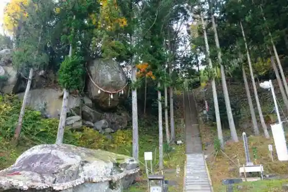
Hiyoriyama Park Cherry Blossoms & Azaleas
Hilltop park overlooking Ishinomaki with spring blooms
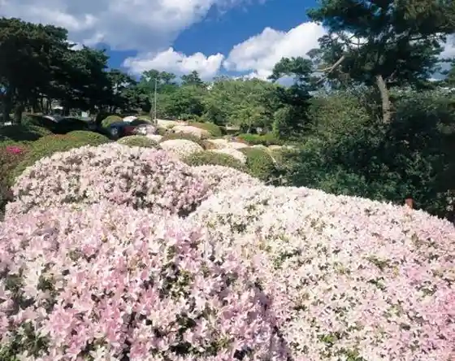
Nagatsura Coast
Coastal scenery on the former Nagatsura shoreline
Tashiro Island
Cat island in Ishinomaki Bay
San Juan Bautista Museum
Replica galleon museum of the Keicho embassy ship
Ishinomaki Arahama Beach
Swimming beach in the Arahama area
Shikayama Park Cherry Blossoms
Spring cherry blossoms at Shikayama Park
Kinkasan Deer & Monkeys
Wildlife on sacred Kinkasan Island